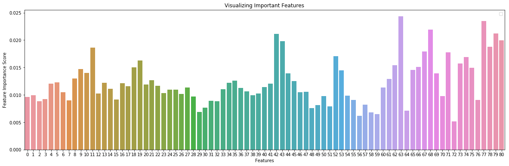
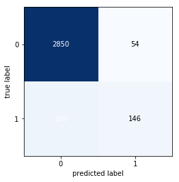

Python 3.6.8 |Anaconda, Inc.| (default, Feb 21 2019, 18:30:04) [MSC v.1916 64 bit (AMD64)]
Type "copyright", "credits" or "license" for more information.
IPython 7.4.0 -- An enhanced Interactive Python.
In [1]: runfile('D:/Dropbox/CVResume/Citrine/LoughnaneSubmission/3_Code+Outputs/RandomForestClassifier-CustomHyperParameterTuning-FINAL.py', wdir='D:/Dropbox/CVResume/Citrine/LoughnaneSubmission/3_Code+Outputs')
No handles with labels found to put in legend.

TrainSet Accuracy :: 0.9925925925925926
DevSet Accuracy :: 0.5805555555555556
TestSet Accuracy :: 0.6036269430051814
Report on Classifications for each "Class" ...
precision recall f1-score support
10/90% A/B 1.00 0.33 0.50 3
20/80% A/B 0.50 0.23 0.32 26
30/70% A/B 0.67 0.45 0.54 62
40/60% A/B 0.73 0.31 0.43 26
50/50% A/B 0.83 0.63 0.71 91
60/40% A/B 0.64 0.32 0.42 22
70/30% A/B 0.73 0.45 0.56 67
80/20% A/B 0.67 0.26 0.37 31
90/10% A/B 1.00 0.12 0.22 8
micro avg 0.73 0.43 0.54 336
macro avg 0.75 0.34 0.45 336
weighted avg 0.72 0.43 0.53 336
samples avg 0.23 0.19 0.20 336
Binary Confusion Matrix (to get a feel for overall performance) :
C:\Users\Greg\Anaconda3\envs\Tensorflow\lib\site-packages\sklearn\metrics\classification.py:1143: UndefinedMetricWarning: Precision and F-score are ill-defined and being set to 0.0 in samples with no predicted labels.
'precision', 'predicted', average, warn_for)
C:\Users\Greg\Anaconda3\envs\Tensorflow\lib\site-packages\sklearn\metrics\classification.py:1145: UndefinedMetricWarning: Recall and F-score are ill-defined and being set to 0.0 in samples with no true labels.
'recall', 'true', average, warn_for)

precision recall f1-score support
0 0.94 0.98 0.96 2904
1 0.73 0.43 0.54 336
micro avg 0.92 0.92 0.92 3240
macro avg 0.83 0.71 0.75 3240
weighted avg 0.92 0.92 0.92 3240
True Negatives ~ Got it Right! :: 2850
False Positives ~ Type I Error - reject true null :: 54
False Negatives ~ Type II Error - accept false null :: 190
True Positives ~ Got it Right! :: 146
Precision :: 0.73
Recall :: 0.43452380952380953
F1 Score :: 0.5447761194029851
Sensitivity :: 0.43452380952380953
Specificity :: 0.981404958677686
Accuracy :: 0.9246913580246914
Total Model Run Time :: 1.6738989353179932
Training Set Accuracies...
[0.99259259]
Development Set Accuracies...
[0.58055556]
Model Hyperparameters...
[('log2', None, 30, 'gini', 1, 2, 'True')]
Model Precisions...
[0.75052933]
Model Recalls...
[0.34430988]
Model F1 Scores...
[0.45258852]
Model Timings (seconds)...
[1.67389894]
For any given Random Forest model chosen:
I expect my blind predictions to perform about this well as the
Test Set Accuracies...
[0.60362694]
Thank you!
Best regards,
Greg Loughnane
In [2]: